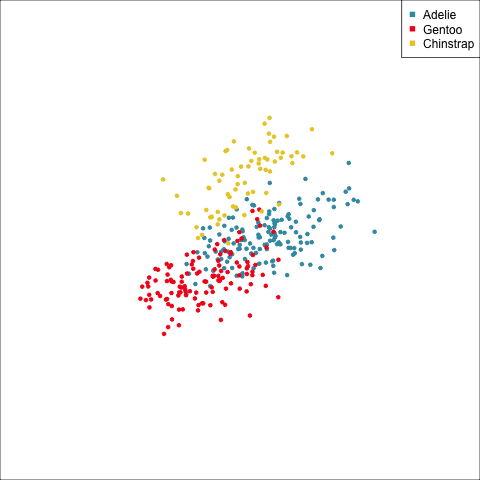
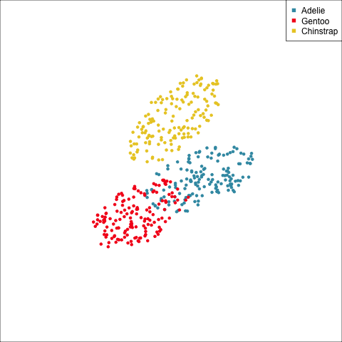
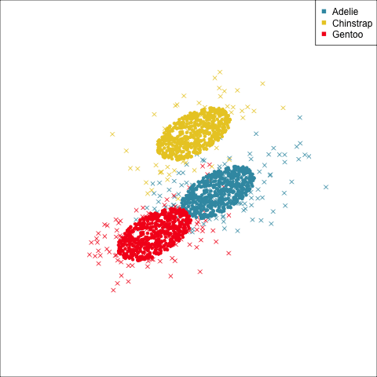
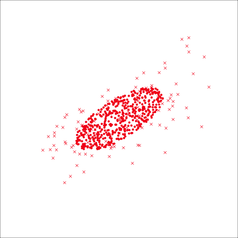
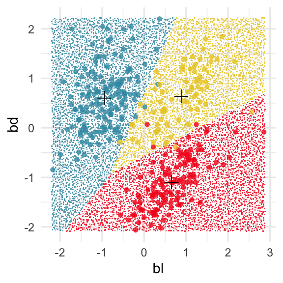
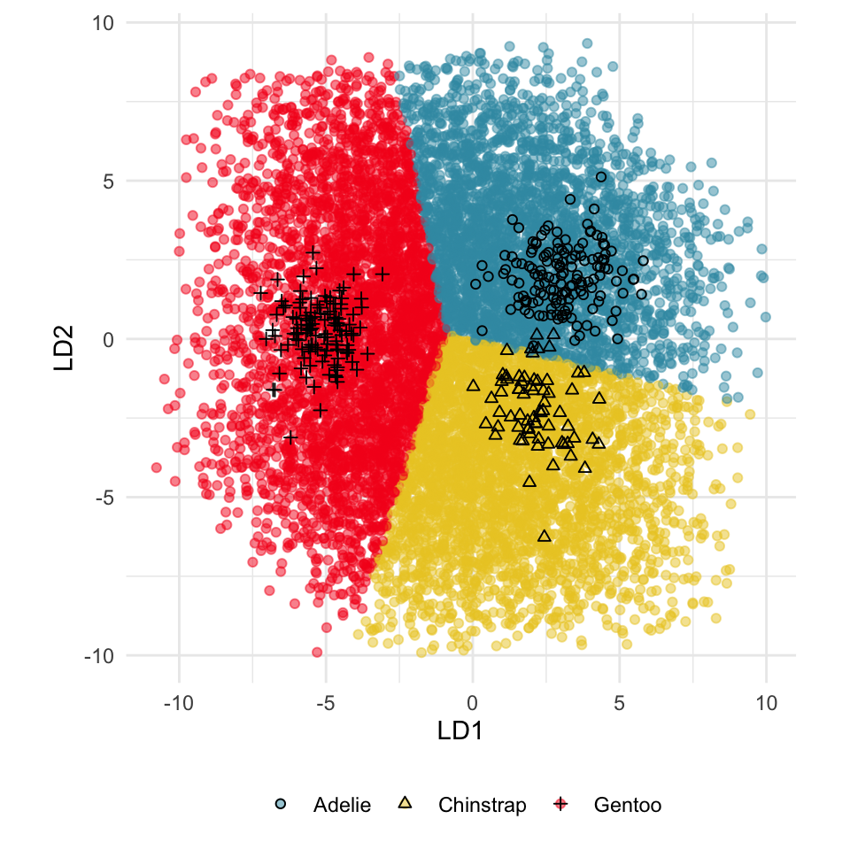
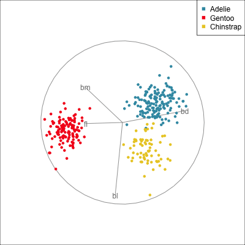

Load libraries
source("code/setup.R")Linear discriminant analysis (LDA) dates to the early 1900s. It’s one of the most elegant and simple techniques for both modeling separation between groups, and as an added bonus, producing a low-dimensional representation of the differences between groups. LDA has two strong assumptions: the groups are samples from multivariate normal distributions, and each have the same variance-covariance. If the latter assumption is relaxed, a slightly less elegant solution results from quadratic discriminant analysis.
Useful explanations can be found in Venables & Ripley (2002) and Ripley (1996). A good general treatment of parametric methods for supervised classification can be found in R. A. Johnson & Wichern (2002) or another similar multivariate analysis textbook. It’s also useful to know that hypothesis testing for the difference in multivariate means using multivariate analysis of variance (MANOVA) has similar assumptions to LDA. Also model-based clustering assumes that each cluster arises from a multivariate normal distribution, and is related to LDA. The methods described here can be used to check these assumptions when applying these methods, too.
Because LDA is a parametric model it is important to check that these assumptions are reasonably satisfied:
LDA builds the model on the between-group sum-of-square matrix
\[B=\sum_{k=1}^g n_k(\bar{X}_k-\bar{X})(\bar{X}_k-\bar{X})^\top\] which measures the differences between the class means, compared with the overall data mean \(\bar{X}\) and the within-group sum-of-squares matrix,
\[ W = \sum_{k=1}^g\sum_{i=1}^{n_k} (X_{ki}-\bar{X}_k)(X_{ki}-\bar{X}_k)^\top \]
which measures the variation of values around each class mean. The linear discriminant space is generated by computing the eigenvectors (canonical coordinates) of \(W^{-1}B\), and this is the \((g-1)\)-D space where the group means are most separated with respect to the pooled variance-covariance. For each class we compute
\[ \delta_k(x) = (x-\mu_k)^\top W^{-1}\mu_k + \log \pi_k \]
where \(\pi_k\) is a prior probability for class \(k\) that might be based on unequal sample sizes, or cost of misclassification. The LDA classifier rule is to assign a new observation to the class with the largest value of \(\delta_k(x)\).
We can fit an LDA model using the lda() function from the MASS package. Here we have used the penguins data, assuming equal prior probability, to illustrate.
source("code/setup.R")Because there are three classes the dimension of the discriminant space is 2D. We can easily extract the group means from the model.
# Extract the sample means
p_lda$means bl bd fl bm
Adelie -0.95 0.60 -0.78 -0.62
Chinstrap 0.89 0.64 -0.37 -0.59
Gentoo 0.65 -1.10 1.16 1.10The coefficients to project the data into the discriminant space, that is the eigenvectors of \(W^{-1}B\) are:
# Extract the discriminant space
p_lda$scaling LD1 LD2
bl -0.24 -2.31
bd 2.04 0.19
fl -1.20 0.08
bm -1.22 1.24and the predicted values, which include class predictions, and coordinates in the discriminant space are generated as:
# Extract the fitted values
p_lda_pred <- predict(p_lda, penguins_sub)The best separation between classes can be viewed from this object, which can be shown to match the original data projected using the scaling component of the model object (see Figure 14.1).
# Check calculations from the fitted model, and equations
# Using the predicted values from the model object
p_lda_pred_x1 <- data.frame(p_lda_pred$x)
p_lda_pred_x1$species <- penguins_sub$species
p_lda1 <- ggplot(p_lda_pred_x1,
aes(x=LD1, y=LD2,
colour=species)) +
geom_point() +
xlim(-6, 8) + ylim(-6.5, 5.5) +
scale_color_discrete_divergingx("Zissou 1") +
ggtitle("(a)") +
theme_minimal() +
theme(aspect.ratio = 1, legend.title = element_blank())
# matches the calculations done manually
p_lda_pred_x2 <- data.frame(as.matrix(penguins_sub[,1:4]) %*%
p_lda$scaling)
p_lda_pred_x2$species <- penguins_sub$species
p_lda2 <- ggplot(p_lda_pred_x2,
aes(x=LD1, y=LD2,
colour=species)) +
geom_point() +
xlim(-6, 8) + ylim(-7, 5.5) +
scale_color_discrete_divergingx("Zissou 1") +
ggtitle("(b)") +
theme_minimal() +
theme(aspect.ratio = 1, legend.title = element_blank())
ggarrange(p_lda1, p_lda2, ncol=2,
common.legend = TRUE, legend = "bottom")![Two plots labelled (a) and (b) that are the same scatterplot, except the scale in each is different. Plot (a) has x-axis LD1 with labels -4, 0, 4 and 8 has y-axis LD2 with labels -6, -3, 0, 3 and 6. Plot (b) has x-axis LD1 with labels -4, 0, 4 and 8 and y-axis LD2 with labels -4, 0 and 4. There is a legend indicating colour is used to show species, with 3 levels: Adelie shown as brilliant greenish blue colour, Chinstrap shown as brilliant yellow colour and Gentoo shown as vivid red colour. The chart is a set of 313 big solid circle points of which about 97% can be seen. Red is separated from the other two clusters, but green and yellow are overlapped.](14-lda_files/figure-html/fig-p-lda-1.png)
The \(W\) and \(B\) matrices cannot be extracted from the model object, so we need to compute these separately. We only need \(W\) actually. It is useful to think of this as the pooled variance-covariance matrix. Because the assumption for LDA is that the population group variance-covariances are identical, we estimate this by computing them for each class and then averaging them to get the pooled variance-covariance matrix. It’s laborious, but easy.
# Compute pooled variance-covariance
p_vc_pool <- mulgar::pooled_vc(penguins_sub[,1:4],
penguins_sub$species)
p_vc_pool bl bd fl bm
bl 0.31 0.18 0.13 0.18
bd 0.18 0.32 0.14 0.20
fl 0.13 0.14 0.23 0.16
bm 0.18 0.20 0.16 0.31This can be used to draw an ellipse corresponding to the pooled variance-covariance that is used by the LDA model.
This LDA approach is widely applicable, but it is useful to check the underlying assumptions on which it depends: (1) that the cluster structure corresponding to each class forms an ellipse, showing that the class is consistent with a sample from a multivariate normal distribution, and (2) that the variance of values around each mean is nearly the same. Figure 14.2 and Figure 14.3 illustrates two datasets, of which only one is consistent with these assumptions. Other parametric models, such as quadratic discriminant analysis or logistic regression, also depend on assumptions about the data which should be validated.
To check the equal and elliptical variance-covariance assumption, generate points on the surface of an ellipse corresponding to the variance-covariance for each group. When watching these ellipses in a tour, they should look similar in all projections.
lda1 <- ggplot(penguins_sub, aes(x=bl,
y=bd,
colour=species)) +
geom_point() +
scale_color_discrete_divergingx("Zissou 1") +
xlim(-2.5, 3) + ylim(-2.5, 2.5) +
ggtitle("(a)") +
theme_minimal() +
theme(aspect.ratio = 1)
lda2 <- ggplot(p_ell, aes(x=bl,
y=bd,
colour=species)) +
geom_point() +
scale_color_discrete_divergingx("Zissou 1") +
xlim(-2.5, 3) + ylim(-2.5, 2.5) +
ggtitle("(b)") +
theme_minimal() +
theme(aspect.ratio = 1)
ggarrange(lda1, lda2, ncol=2,
common.legend = TRUE, legend = "bottom")![Two plots labelled (a) and (b). Both have x-axis bl with labels -2, -1, 0, 1, 2 and 3 and y-axis bd with labels -2, -1, 0, 1 and 2. There is a legend indicating colour is used to show species, with 3 levels: Adelie shown as brilliant greenish blue colour, Chinstrap shown as brilliant yellow colour and Gentoo shown as vivid red colour. Plot (a) is a set of 333 big solid circle points of which about 97% can be seen, where differences between the three groups are visible. Plot (b) is a set of 450 big solid circle points arranged into three very similar shaped and oriented non-overlapping ellipses.](14-lda_files/figure-html/fig-lda-assumptions1-1.png)
# Now repeat for a data set that violates assumptions
data(bushfires)
lda3 <- ggplot(bushfires, aes(x=log_dist_cfa,
y=log_dist_road,
colour=cause)) +
geom_point() +
scale_color_discrete_divergingx("Zissou 1") +
xlim(6, 11) + ylim(-1, 10.5) +
ggtitle("(a)") +
theme_minimal() +
theme(aspect.ratio = 1)
b_ell <- NULL
for (i in unique(bushfires$cause)) {
x <- bushfires |> dplyr::filter(cause == i)
e <- gen_xvar_ellipse(x[,c(57, 59)], n=150, nstd=2)
e$cause <- i
b_ell <- bind_rows(b_ell, e)
}
lda4 <- ggplot(b_ell, aes(x=log_dist_cfa,
y=log_dist_road,
colour=cause)) +
geom_point() +
scale_color_discrete_divergingx("Zissou 1") +
xlim(6, 11) + ylim(-1, 10.5) +
ggtitle("(b)") +
theme_minimal() +
theme(aspect.ratio = 1)
ggarrange(lda3, lda4, ncol=2,
common.legend = TRUE, legend = "bottom")![Two plots labelled (a) and (b). Both have x-axis log_dist_cfa with labels 6, 7, 8, 9, 10 and 11 and y-axis log_dist_road with labels 0.0, 2.5, 5.0, 7.5 and 10.0. There is a legend indicating colour is used to show cause, with 4 levels: accident shown as brilliant greenish blue colour, arson shown as light yellowish green colour, burning_off shown as strong orange yellow colour and lightning shown as vivid red colour. Plot (a) is a set of 333 big solid circle points of which about 97% can be seen, with few differences between the four groups. Plot (b) is a set of 450 big solid circle points arranged into four differently shaped and oriented overlapping ellipses.](14-lda_files/figure-html/fig-lda-assumptions2-1.png)
The equal and elliptical variance-covariance assumption is reasonable for the penguins data because the ellipse shapes roughly match the spread of the data. It is not a suitable assumption for the bushfires data, because the spread is not elliptically-shaped and varies in size between groups.
This approach extends to any dimension. We would use the same projection sequence to view both the data and the variance-covariance ellipses, as in Figure 14.4. It can be seen that there is some difference in the shape and size of the ellipses between species, in some projections, and also with the spread of points in the projected data. However, the differences are small, so it would be safe to assume that the population variance-covariances are equal.
p_ell <- NULL
for (i in unique(penguins_sub$species)) {
x <- penguins_sub |> dplyr::filter(species == i)
e <- gen_xvar_ellipse(x[,1:4], n=150, nstd=1.5)
e$species <- i
p_ell <- bind_rows(p_ell, e)
}
p_ell$species <- factor(p_ell$species)
load("data/penguins_tour_path.rda")
animate_xy(p_ell[,1:4], col=factor(p_ell$species))
render_gif(penguins_sub[,1:4],
planned_tour(pt1),
display_xy(half_range=0.9, axes="off", col=penguins_sub$species),
gif_file="gifs/penguins_lda1.gif",
frames=500,
loop=FALSE)
render_gif(p_ell[,1:4],
planned_tour(pt1),
display_xy(half_range=0.9, axes="off", col=p_ell$species),
gif_file="gifs/penguins_lda2.gif",
frames=500,
loop=FALSE)

As a further check, we could generate three ellipses corresponding to the pooled variance-covariance matrix, as would be used in the model, centered at each of the means. Overlay this with the data, as done in Figure 14.5. Now you will compare the spread of the observations in the data, with the elliptical shape of the pooled variance-covariance. If it matches reasonably we can safely use LDA. This can also be done group by group when multiple groups make it difficult to view all together.
To check the fit of the equal variance-covariance assumption, simulate points on the ellipse corresponding to the pooled sample variance-covariance matrix. Generate one for each group centered at the group mean, and compare with the data.
# Create an ellipse corresponding to pooled vc
pool_ell <- gen_vc_ellipse(p_vc_pool,
xm=rep(0, ncol(p_vc_pool)))
# Add means to produce ellipses for each species
p_lda_pool <- data.frame(rbind(
pool_ell +
matrix(rep(p_lda$means[1,],
each=nrow(pool_ell)), ncol=4),
pool_ell +
matrix(rep(p_lda$means[2,],
each=nrow(pool_ell)), ncol=4),
pool_ell +
matrix(rep(p_lda$means[3,],
each=nrow(pool_ell)), ncol=4)))
# Create one data set with means, data, ellipses
p_lda_pool$species <- factor(rep(levels(penguins_sub$species),
rep(nrow(pool_ell), 3)))
p_lda_pool$type <- "ellipse"
p_lda_means <- data.frame(
p_lda$means,
species=factor(rownames(p_lda$means)),
type="mean")
p_data <- data.frame(penguins_sub[,1:5],
type="data")
p_lda_all <- bind_rows(p_lda_means,
p_data,
p_lda_pool)
p_lda_all$type <- factor(p_lda_all$type,
levels=c("mean", "data", "ellipse"))
shapes <- c(3, 4, 20)
p_pch <- shapes[p_lda_all$type]# Code to run the tour
animate_xy(p_lda_all[,1:4], col=p_lda_all$species, pch=p_pch)
load("data/penguins_tour_path.rda")
render_gif(p_lda_all[,1:4],
planned_tour(pt1),
display_xy(col=p_lda_all$species, pch=p_pch,
axes="off", half_range = 0.7),
gif_file="gifs/penguins_lda_pooled1.gif",
frames=500,
loop=FALSE)
# Focus on one species
render_gif(p_lda_all[p_lda_all$species == "Gentoo",1:4],
planned_tour(pt1),
display_xy(col="#F5191C",
pch=p_pch[p_lda_all$species == "Gentoo"],
axes="off", half_range = 0.7),
gif_file="gifs/penguins_lda_pooled2.gif",
frames=500,
loop=FALSE)

From the tour, we can see that the assumption of equal elliptical variance-covariance is a reasonable assumption for the penguins data. In all projections the ellipse is reasonably matching the spread of the observations.
The boundaries for a classification model can be examined by:
We’ll look at this for 2D using the LDA model fitted to bl, and bd of the penguins data.
p_bl_bd_lda <- lda(species~bl+bd, data=penguins_sub,
prior = c(1/3, 1/3, 1/3))The fitted model means \(\bar{x}_{Adelie} = (\) -0.95, 0.6\()^\top\), \(\bar{x}_{Chinstrap} = (\) 0.89, 0.64\()^\top\), and \(\bar{x}_{Gentoo} = (\) 0.65, -1.1\()^\top\) can be added to the plots.
The boundaries can be examined using the explore() function from the classifly package, which generates observations in the range of all values ofbl and bd and predicts their class. Figure 14.6 shows the resulting prediction regions, with the observed data and the sample means overlaid.
# Compute points in domain of data and predict
p_bl_bd_lda_boundaries <- explore(p_bl_bd_lda, penguins_sub)
p_bl_bd_lda_m1 <- ggplot(p_bl_bd_lda_boundaries) +
geom_point(aes(x=bl, y=bd,
colour=species,
shape=.TYPE), alpha=0.8) +
scale_color_discrete_divergingx("Zissou 1") +
scale_shape_manual(values=c(46, 16)) +
theme_minimal() +
theme(aspect.ratio = 1, legend.position = "none")
p_bl_bd_lda_means <- data.frame(p_bl_bd_lda$means,
species=rownames(p_bl_bd_lda$means))
p_bl_bd_lda_m1 +
geom_point(data=p_bl_bd_lda_means,
aes(x=bl, y=bd),
colour="black",
shape=3,
size=3) 
This approach can be readily extended to higher dimensions. One first fits the model with all four variables, and uses explore() to generate points in the 4D space with predictions, generating a representation of the prediction regions. Figure 14.7 (a) shows the results using a slice tour (Laa et al., 2020). Points inside the slice are shown in larger size. The slice is made in the centre of the data, to show the boundaries in this neighbourhood. As the tour progresses we see a thin slice through the centre of the data, parallel with the projection plane. In most projections there is some small overlap of points between groups, which happens because we are examining a 4D object with 2D. The slice helps to alleviate this, allowing a focus on the boundaries in the centre of the cube. In all projections the boundaries between groups is linear, as would be expected when using LDA. We can also see that the model roughly divides the cube into three relatively equally-sized regions.
Figure 14.7 (b) shows the three prediction regions, represented by points in 4D, projected into the discriminant space. Linear boundaries neatly divide the full space, which is to be expected because the LDA model computes its classification rules in this 2D space. In this view the data has been overlaid and it can be seen that the boundaries produced by LDA quite nicely separate the species, albeit some confusion between Adelie and Chinstrap. Overlaying the data on the slice tour in (a) could be useful but it also adds too many parts to the plot, possibly making it more difficult to focus on the boundary.
p_lda <- lda(species ~ ., penguins_sub[,1:5], prior = c(1/3, 1/3, 1/3))
p_lda_boundaries <- explore(p_lda, penguins_sub)# Code to run the tour
animate_slice(p_lda_boundaries[
p_lda_boundaries$.TYPE == "simulated", 1:4],
col=p_lda_boundaries$species[
p_lda_boundaries$.TYPE == "simulated"],
v_rel=0.8,
axes="bottomleft")
render_gif(p_lda_boundaries[p_lda_boundaries$.TYPE == "simulated",1:4],
planned_tour(pt1),
display_slice(v_rel=0.8,
col=p_lda_boundaries$species[
p_lda_boundaries$.TYPE == "simulated"],
axes="bottomleft"),
gif_file="gifs/penguins_lda_boundaries.gif",
frames=500,
loop=FALSE
)# Project the boundaries into the 2D discriminant space
p_lda_b_sub <- p_lda_boundaries[
p_lda_boundaries$.TYPE == "simulated",
c(1:4, 6)]
p_lda_b_sub_ds <- data.frame(as.matrix(p_lda_b_sub[,1:4]) %*%
p_lda$scaling)
p_lda_b_sub_ds$species <- p_lda_b_sub$species
p_lda_b_sub_ds_p <- ggplot(p_lda_b_sub_ds,
aes(x=LD1, y=LD2,
colour=species)) +
geom_point(alpha=0.5) +
geom_point(data=p_lda_pred_x1, aes(x=LD1,
y=LD2,
shape=species),
inherit.aes = FALSE) +
scale_color_discrete_divergingx("Zissou 1") +
scale_shape_manual(values=c(1, 2, 3)) +
theme_minimal() +
theme(aspect.ratio = 1,
legend.position = "bottom",
legend.title = element_blank()) 

From the tour, we can see that the LDA boundaries divide the classes only in the discriminant space. It is not using the space orthogonal to the 2D discriminant space. You can see this because the boundary is sharp in just one 2D projection, while most of the projections show some overlap of regions.
Because the variables are standardised before computing LDA in the examples above, we can examine the magnitude and sign of the coefficients for the discriminant space to assess the importance of variables (Table 14.1). In the direction of LD1, the variables bd, fl, bm have much larger magnitudes than bl. This says that in the it is a combination of these three variables, actually a contrast between bd against fl and bm because of the differing signs. In the direction of LD2 the variables bl and bm have the largest magnitude and opposing signs which says that it is a contrast of these two variables which produce the second axis of the linear discriminant space.
The next step is to match LD1 and LD2 with the differences between the clusters. From Figure 14.7 (b) we can see that in the direction of LD1 the structure is that the Gentoo penguins (red) are distinct from the other two species, and in the direction of LD2 we can see the slightly overlapping Adelie and Chinstrap clusters. Then we can conclude that bl and bm are important for distinguishing Adelie from Chinstrap. We can also conclude that bl is not important for distinguishing Gentoo from the other species.
Interpretation using the magnitude and sign of the coefficients is accurate only if there is no association between the variables. If the variables are associated, then one variable may still be important for the structure seen, but masked by the other variables. For example, if bl is strongly correlated with bd (which it isn’t) then it is possible that although bl does not contribute to LD1, it is still important for distinguishing Gentoo penguins. This type of higher level association and the impact of interpretability can be explored using the radial tour.
| LD1 | LD2 | LD1 | LD2 | |
|---|---|---|---|---|
| bl | -0.24 | -2.31 | -0.09 | -0.89 |
| bd | 2.04 | 0.19 | 0.76 | 0.14 |
| fl | -1.20 | 0.08 | -0.45 | -0.01 |
| bm | -1.22 | 1.24 | -0.45 | 0.43 |
The discriminant space can be considered to be a 2D projection basis, except that it needs to be orthonormalised to be an orthonormal basis. This orthonormal basis provides the initial projection for a radial tour where each variable can be rotated out of the projection to assess its importance to the visible structure. It can also be used as the anchor basis for a local tour, where small steps to and from this projection to randomly selected nearby projections are shown. This allows the inspection of the local neighbourhood of the discriminant space, to assess the effect of small changes in the projection basis on the visible structure.

The radial tour can be used to assess variable importance to the structure present, especially when predictors are strongly associated with each other.
Figure 14.8 illustrates how the radial tour (a,b) and the local tour (c,d) can be used to assess the importance of variables to structure of interest in a plot. In the radial tour the interpolation runs from the projection corresponding to the discriminant space, and to a projection where one of the variables (here bl) has been removed. The purpose for examining bl is that it has a small contribution to LD1, and thus may not be important for separating Gentoo from the other species. We would also be assessing its large contribution to LD2, and the separation between Adelie and Chinstrap, where we expect that it is indispensable. This is indeed what we learn. By removing bl there is no change to the separation between Gentoo, so it might be a simpler best 2D projection if the coefficient for bl in LD1 is actually 0. However, for LD2 removing bl results in completely overlapping clusters for Adelie and Chinstrap, which confirms that this is the main variable that distinguishes the two species.
The local tour is used here to explore the neighbourhood of the discriminant space. We anchor the tour at the discriminant space and interpolate to many random target planes within a specified distance. It can be used to examine how the structure changes with small differences in the combination of variables. Here we can see some small improvements in distinguishing the Adelie (blue) from Chinstrap (yellow) penguins. In the discriminant space there are about three Adelie penguins mixed among a group of Chinstrap penguins. In one change of the projection basis this can be reduced to one Adelie penguin mixed among the Chinstrap, and otherwise a neatly linear boundary could divide the clusters. This is a small improvement, but it does illustrate how visualisation in high dimensions can help to refine an automated rule.
In the penguins data the small contribution of bl in the discriminant space for separating Gentoo can be ignored, or changed to zero without affecting the class difference.
For the simple_clusters compute the LDA model, and make a plot of the data, with points coloured by the true class. Overlay variance-covariance ellipses, and a \(+\) indicating the sample mean for each class. Is it reasonable to assume that the two classes are sampled from populations with the same variance-covariance?
Examine the clusters corresponding to the true classes in the clusters data set, using a tour. Based on the shape of the data is the assumption of equal variance-covariance reasonable?
Examine the pooled variance-covariance for the clusters data, overlaid on the data in a tour on the 5D. Does it fit the variance of each cluster nicely?
There are several interesting data sets with class variables available on the GGobi website. Examine the differences between type of music, based on the variables lvar, lave, lmax, lfener, lfreq. (It is best to remove the “New wave” class because there are too few observations.) Examine the pooled variance-covariance for the two types of music. Does it fit the variance of each cluster nicely?
The music data can be read using:
Fit an LDA model to the simple_clusters data, using the cl variables as the class. Examine the boundaries produced by the model, in 2D.
Fit an LDA model to the clusters data, using the cl variables as the class. Examine the boundaries produced by the model in 5D.
Assess the LDA assumptions for the multicluster data. Is LDA an appropriate model? Do you think it is still possible to produce a useful classification for this data? Fit it to check.
Compute the first 12 PCs of the sketches data. Check the assumption of equal, elliptical variance-covariance of the 6 groups. Regardless of whether you decide that the assumption is satisfied or not, fit an LDA to the 12 PCs. Extract the discriminant space (the x component of the predict object), and examine the separation (or not) of the 6 groups in this 5D space. Is LDA providing a good classification model for this data?
Even though the bushfires data does not satisfy the assumptions for LDA, fit LDA to the first five PCs. Examine the class differences in the 3D discriminant space.
Compute the boundary between classes, for the LDA model where the prior probability reflects the sample size, and the LDA model where the priors are equal for all groups. How does the boundary between lightning cause fires and the other groups change?
Using the aflw data (using the same subset of variables and players as used in Q3 of Chapter 13) compute:
position is removed for the calculation.)position.position.Discuss what is learned from each representation of the data, relative to the differences between skills of the players. And also, using examine the coefficients of the discriminant space to explain how the skill sets of the player types are different.
View the most important variables contributing to the discriminant space in a tour. Is it possible to distinguish the player types in this subset of variables?
You can use this code to subset the data:
aflw data, use a radial tour to explore the contributions of the variables that contribute the least. The purpose is to determine whether a simpler projection can be used that distinguishes the player types equally well.